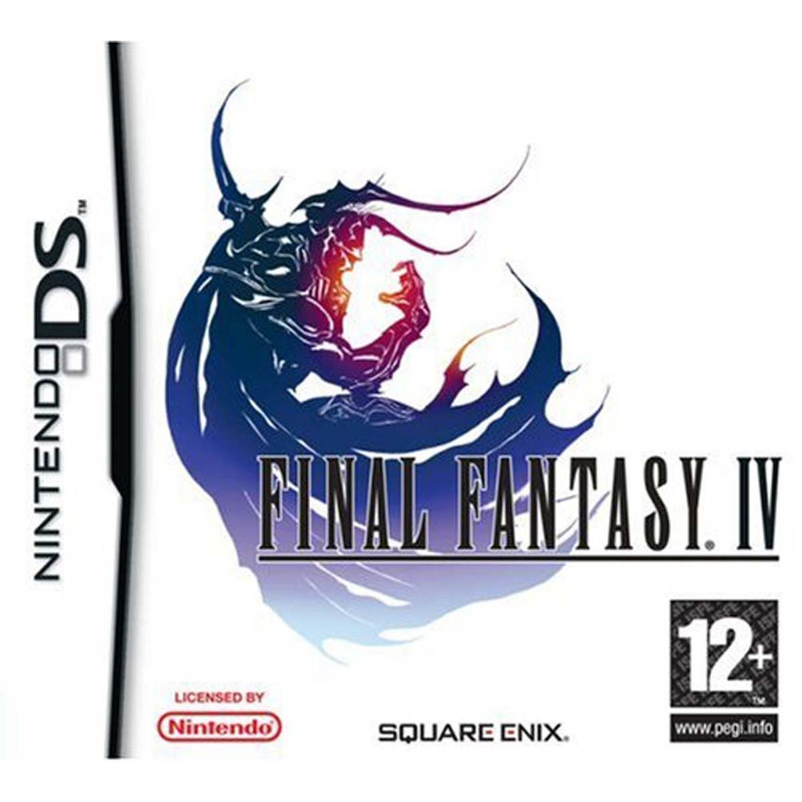

Este fue de los primeros juegos que tuve en mi ds de pequeño me encantan los personajes desde el protagonista cecil, que durante el juego se cuestiona su moral debido a que al seguir las ordenes del rey termina quemando una aldea de gente inocente, debido a esto decide ya no seguir las ordenes del rey escapando y dando inicio a su aventura. otros de mis personajes favoritos son Porom y Palom auque sean compañeros temporales en el juego poseian una mecanica divertida en donde se juntaban para lanzar hechizos magicos juntos haciendo muchos daño a los enemigos, es una lastima que se sacrifiquen por el grupo convirtiendose en estatuas.
